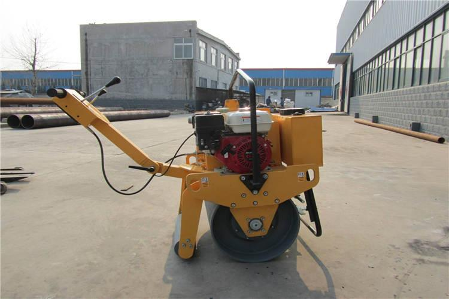

What is the difference between diesel and gasoline used in small rollers?
There must be many people who prefer diesel engines. However, there are still people who choose small rollers with gasoline engines. Therefore, further in-depth analysis is needed. The diesel fuel mixture is carried out in the combustion chamber, and the high-pressure injection of diesel fuel enters the combustion chamber. After compression and self-ignition, it works in the manner of fuel inje...
Jul 6, 2021
+33 665975977 +33 665975977
Precautions for hydraulic oil of small excavator crusher
If your excavator often uses a crusher, the reason for the blackening of hydraulic oil is not only impurities, but also the irregularity of the grease.
When replacing the boring machine with the excavating machine, it is necessary to lift the broken hammer and press the steel into the piston. Only half of the standard grease gun is needed for each filling. Because if the steel is not pres...
Jul 2, 2021

The big role of crawler trucks and small agricultural machinery
The development speed of the agricultural machinery equipment crawler transporter is what we can observe, and now our friends around us are also increasing their understanding and use of this equipment, indeed we have a handy helper, we can play in the work process Use your own advantages to complete the workload as soon as possible.
Advantages of crawler trucks
1. The crawler trans...
Jun 29, 2021
Working Condition Analysis of Hydraulic Small Excavator
The working process of the hydraulic small excavator includes the following actions: boom lifting, arm retracting, bucket loading and unloading, turntable rotation, whole machine walking and other auxiliary actions. Except for auxiliary actions such as steering of the whole machine that do not require full power drive, the others are the main actions of hydraulic small excavators, and full powe...
Jun 26, 2021

HT08 small excavator sent to the United States
On June 23, the HT08 mini excavator produced by Hightop Group was installed in the industrial park and will soon be shipped to the United States. At present, the mini excavators produced by Hightop Group are highly efficient, easy to maintain, and have long service life. They are highly praised by new and old customers.
When it comes to the application of mini excavato...
Jun 24, 2021
Functional requirements of modern monitoring system for small excavators
With the widespread application of monitoring systems on small excavators, the requirements for human-machine-information interaction are getting higher and higher. In addition to the functions of the modern small excavator electronic monitoring system, its design rationality, versatility, and ease of operation need to be considered and discussed ingeniously. The relevant technical points need ...
Jun 22, 2021
Small excavator crankshaft failure
The common causes of crankshaft failure of small excavator diesel engine are:
First of all, when the lubrication is not good.
A poor diesel lubrication system and the semi-friction connection between the journal and the gasket (that is, the bearing at the cut is not strong) will cause the bearing bush to burn out and often use up the shaft. After the root is removed, the stress will...
Jun 19, 2021

Standard operation of small rollers during running-in period
In the process of using small rollers, the failures are actually unexpected, because we have not anticipated that, once the failure occurs, everyone will often be caught off guard and do not know how to deal with it. For example, if the small roller is in use The engine suddenly does not start during driving. Do you know the reason? In fact, when you are driving a small roller, if you do a good...
Jun 15, 2021
Design and simulation of self-propelled anti-rollover for mountain orchard of crawler transporter
In order to adapt to the transportation characteristics of the mountain orchard road environment, according to the walking characteristics of the crawler truck, the overall design requirements of the mountain orchard crawler truck based on improving the anti-rollover performance are proposed. On the basis of completing the design of each assembly, with the goal of improving the anti-rollover pe...
Jun 7, 2021
Details of maintenance of hydraulic cylinders for small excavators
Due to the nature of the excavator's working environment, it should be paid attention to in daily maintenance. When it comes to the maintenance of hydraulic cylinders of excavators, I think everyone knows that the purpose is to contaminate the hydraulic oil. The specific measures are as follows:
1. Regularly replace the oil in the hydraulic cylinder and clean the filter screen to ensure i...
Jun 4, 2021
What are the advantages of agricultural crawler equipment?
In the fruit harvest season, our staff need to quickly transport the fruits to the consumer market in a short period of time. Due to the lack of transportation machinery in mountain orchards, this problem has become increasingly prominent, which has seriously affected the development of the orchard planting industry and the improvement of the economic benefits of fruit farmers. .
But frie...
Jun 1, 2021
What to do if the tires of crawler trucks slip
Crawler transporter is a commonly used transporter, its use effect is very good, and it has high working efficiency and powerful functions. The scope of application is wide. However, tire slip is unavoidable for every vehicle. Here's how to deal with tire slip of a crawler truck:
1. If the front wheel of the tracked transporter slips, the steering wheel cannot be turned. The vehicle shoul...
May 29, 2021
Get rid of traditional thinking, break the traditional path, Jining optimizes the business environment and speeds up
In the work of optimizing the business environment, Jining City has implemented "direct export of cross-border e-commerce enterprises to enterprises", constantly breaking away from traditional thinking and breaking traditional paths, and effectively providing convenience for enterprises in terms of handling procedures and helping high-quality industrial development.
While continuously opt...
May 27, 2021
8 popular advantages of static roller compactors
Road rollers are a large-scale equipment that we should often see when building roads. There are also many types of road rollers, not the one we see. Static roller roller is one of the more widely used large-scale roller equipment. It can compact gravel, gravel, sand, sand-gravel mixture, asphalt concrete and cinder and other materials. It is an ideal compaction equipment for the construction o...
May 25, 2021

The essential operation guide for the first time using a small roller
Small rollers are simple to operate and easy to use. They are easier to operate than large rollers, and they can also complete tasks that large rollers can’t. That said, you still need to master some operating procedures in use. If you don’t know this well, then Let's take a look at the article. I believe this article will bring you a different visual impact. Let's take a look at the article be...
May 22, 2021
How to correctly operate the remote control lawn mower
As the name suggests, the main function of the remote control lawn mower is mowing and shredding grass. In fact, the full name of this equipment independently developed by Hitop Machinery is "Multifunctional Remote Control Orchard Manager". Today, the editor will share with you the correct way to open this machine.
Be sure to check regularly whether the diesel engine is filled with proper...
May 20, 2021
2021 HIGHTOP GROUP: JOIN THEHANDS,SHARE THE FUTURE!
On May 15, 2021, the wind is sunny and the sky is clear. In order to promote the communication between the company employees and enrich the employees' spare time, Shandong Hightop Group organized a "JOIN THEHANDS, SHARE THE FUTURE!" as the theme Hiking and mountaineering activities. This event was attended by more than 80 people from the international trade department, domestic trade department...
May 18, 2021
The first 9710! Customs helps Jining City formally enter a new era of cross-border e-commerce export (B2B)
On May 10, Jining Industrial (Shandong) Corporation, a wholly-owned subsidiary of Shandong Hightop Machinery Group in Jining City, declared a batch of machinery and equipment for export through the "9710" trade method. This is the first time that a foreign trade enterprise in Jining City passed the customs clearance. This model handles export business, marking that Jining City has officially en...
May 11, 2021
Four principles of fault handling for small excavators
With the development of science and technology, people have long since got rid of the era of manpower reclaiming and loosening the soil. Most of them use small agricultural machinery for agricultural production. Small excavators are the main tools for orchard farmers to loosen the soil. No matter which tool is used frequently, it is easy Cause various failures. If a small excavator fails, don't...
May 7, 2021
How to drive a small crawler truck in rainy days
Small crawler truck manufacturers tell you how to drive small crawler trucks on rainy days, pay attention to safety when driving small crawler trucks on rainy days, then how to drive on rainy days, the following small crawler truck manufacturers will explain the small How to run a crawler truck on rainy days.
Slow down and drive carefully: The braking distance on muddy roads can be up to ...
Apr 29, 2021
HT08 mini excavator sent to Europe
On April 26, the HT08 mini excavator produced by Hightop Group was installed in the industrial park and will soon be shipped to Europe. At present, the mini excavators produced by Hightop Group are highly efficient, easy to maintain, and have long service life. They are highly praised by new and old customers.
When it comes to the application of mini excavators in the agricultural ...
Apr 26, 2021
News
Hot Product
 HT10A 1T Mini Excavator
HT10A 1T Mini Excavator
HT10A 1T Mini Excavator
First-Class Configuration of 1T Mini Excavator
1.Dynamical System
High quality Yanmar / Kubota / Briggs&Stratton/Changcha...
 HT10B 1T Mini Excavator
HT10B 1T Mini Excavator
HT10B 1ton Mini Excavator
First-Class Configuration of HT10B Mini Excavator：
1.The important components on the machine from developed countries ...